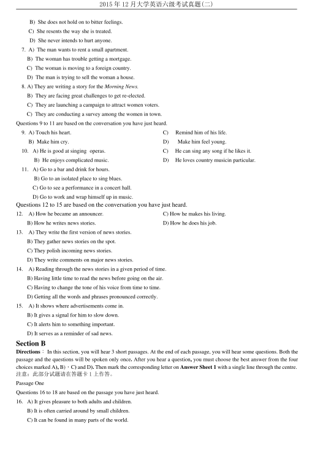
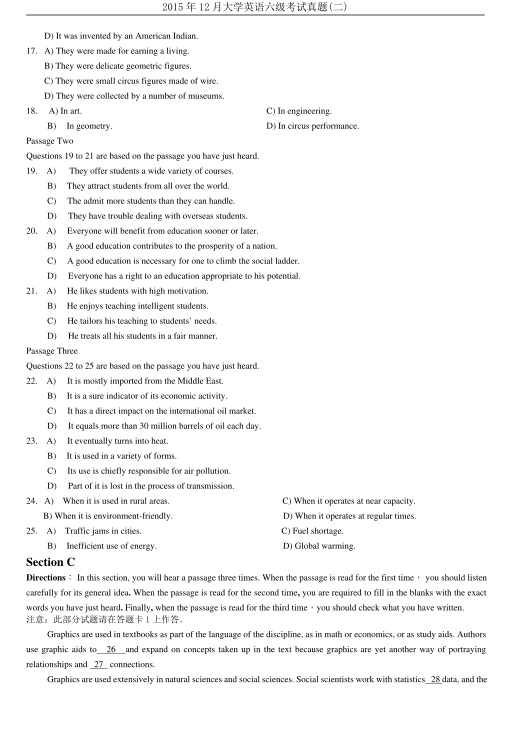
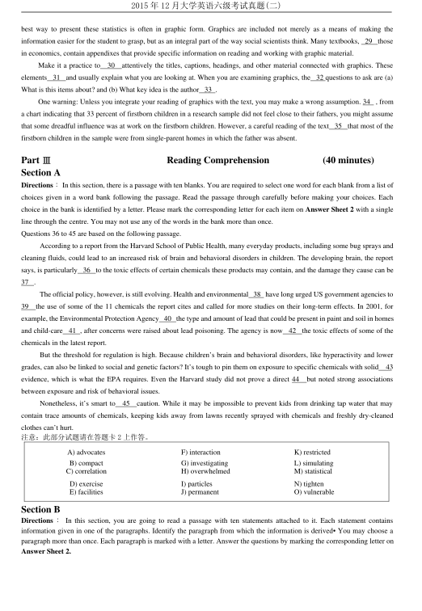
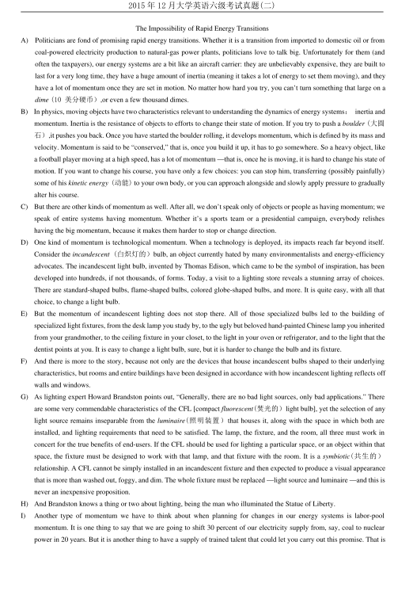
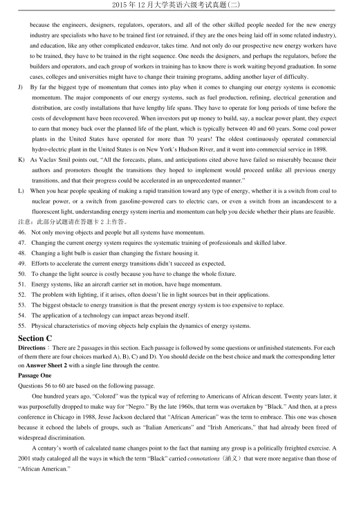
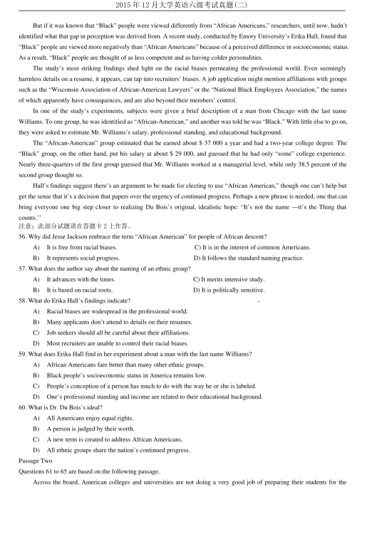
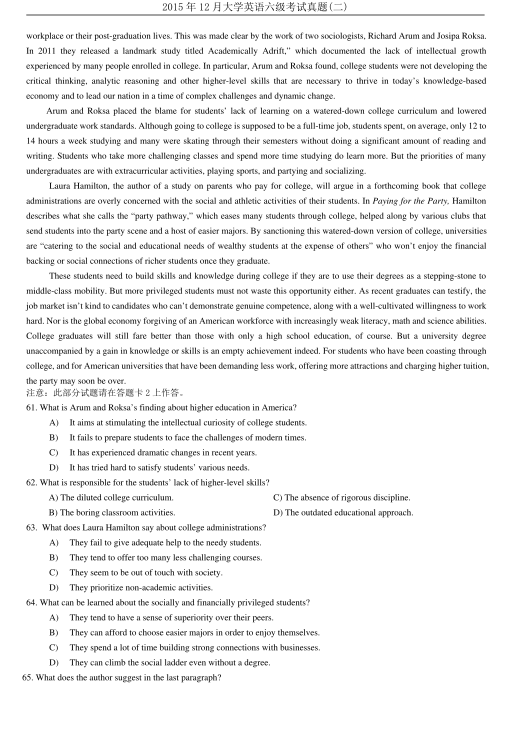
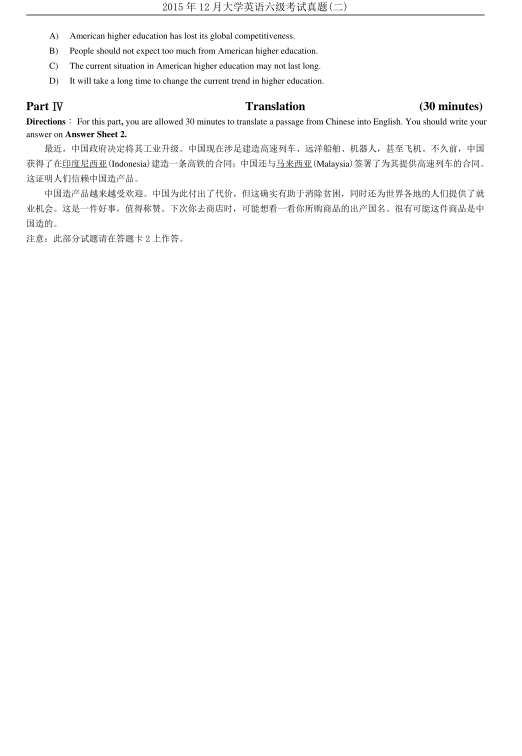

第 1 / 9 页

2015 年12 月大学英语六级考试真题(二)
1
2015 年12 月大学英语六级考试真题(二)
Part Ⅰ
Writing
(30 minutes)
Directions：For this part, you are allowed 30 minutes to write a short essay based on the picture below. You should focus on the
difficulty in acquiring useful information in spite of advanced information technology. You are required to write at least
150 words but no more than 200 words.
注意：此部分试题请在答题卡1 上作答。
PartⅡ
Listening Comprehension
(30 minutes)
Section A
Directions：In this section, you will hear 8 short conversations and 2 long conversations. At the end of each conversation, one
or more questions will be asked about what was said. Both the conversation and the questions will be spoken only once. After
each question there will be a pause. During the pause, you must read the four choices marked A), B), C) and D), and decide
which is the best answer. Then mark the corresponding letter on Answer Sheet 1 with a single line through the centre.
注意：此部分试题请在答题卡1 上作答。
1.
A) She is impatient to learn computer programming.
B) She is unaware her operation system is outdated.
C)She is unable to use the new computer program.
D)She is amazed at the fast change of technology.
2.
A) He has long been fed up with traveling.
B) He prefers to stay home for the holiday.
C) He is going out of town for a couple of days.
D) He is annoyed by the heavy traffic downtown.
3.
A) The challenges facing East Asia.
t
B) The location for their new office.
C) Their expansion into the overseas market.
D) The living expenses in Tokyo and Singapore.
4.
A) A number of cell phones were found after the last show.
B) The woman forgot where she had left her cell phone.
C) The woman was very pleased to find her cell phone.
D) Reserved tickets could be picked up at the ticket counter.
5. A) The building materials will be delivered soon.
B) The project is being held up by bad weather.
C) The construction schedule may not be met.
D) Qualified carpenters are not easy to find.
6. A) She is getting very forgetful these days.
We just don’t have much useful information. ”
查看 / 复制本页文字
2015 年12 月大学英语六级考试真题(二) 1 2015 年12 月大学英语六级考试真题(二) Part Ⅰ Writing (30 minutes) Directions：For this part, you are allowed 30 minutes to write a short essay based on the picture below. You should focus on the difficulty in acquiring useful information in spite of advanced information technology. You are required to write at least 150 words but no more than 200 words. 注意：此部分试题请在答题卡1 上作答。 PartⅡ Listening Comprehension (30 minutes) Section A Directions：In this section, you will hear 8 short conversations and 2 long conversations. At the end of each conversation, one or more questions will be asked about what was said. Both the conversation and the questions will be spoken only once. After each question there will be a pause. During the pause, you must read the four choices marked A), B), C) and D), and decide which is the best answer. Then mark the corresponding letter on Answer Sheet 1 with a single line through the centre. 注意：此部分试题请在答题卡1 上作答。 1. A) She is impatient to learn computer programming. B) She is unaware her operation system is outdated. C)She is unable to use the new computer program. D)She is amazed at the fast change of technology. 2. A) He has long been fed up with traveling. B) He prefers to stay home for the holiday. C) He is going out of town for a couple of days. D) He is annoyed by the heavy traffic downtown. 3. A) The challenges facing East Asia. t B) The location for their new office. C) Their expansion into the overseas market. D) The living expenses in Tokyo and Singapore. 4. A) A number of cell phones were found after the last show. B) The woman forgot where she had left her cell phone. C) The woman was very pleased to find her cell phone. D) Reserved tickets could be picked up at the ticket counter. 5. A) The building materials will be delivered soon. B) The project is being held up by bad weather. C) The construction schedule may not be met. D) Qualified carpenters are not easy to find. 6. A) She is getting very forgetful these days. We just don’t have much useful information. ”
第 2 / 9 页

2015 年12 月大学英语六级考试真题(二)
B) She does not hold on to bitter feelings.
C) She resents the way she is treated.
D) She never intends to hurt anyone.
7. A) The man wants to rent a small apartment.
B) The woman has trouble getting a mortgage.
C) The woman is moving to a foreign country.
D) The man is trying to sell the woman a house.
8. A) They are writing a story for the Morning News.
B) They are facing great challenges to get re-elected.
C) They are launching a campaign to attract women voters.
C) They are conducting a survey among the women in town.
Questions 9 to 11 are based on the conversation you have just heard.
9. A) Touch his heart.
C)
Remind him of his life.
B) Make him cry.
D)
Make him feel young.
10. A) He is good at singing operas.
C)
He can sing any song if he likes it.
B) He enjoys complicated music.
D)
He loves country musicin particular.
11. A) Go to a bar and drink for hours.
B) Go to an isolated place to sing blues.
C) Go to see a performance in a concert hall.
D) Go to work and wrap himself up in music.
Questions 12 to 15 are based on the conversation you have just heard.
12.
A) How he became an announcer.
C) How he makes his living.
B) How he writes news stories.
D) How he does his job.
13.
A) They write the first version of news stories.
B) They gather news stories on the spot.
C) They polish incoming news stories.
D) They write comments on major news stories.
14.
A) Reading through the news stories in a given period of time.
B) Having little time to read the news before going on the air.
C) Having to change the tone of his voice from time to time.
D) Getting all the words and phrases pronounced correctly.
15.
A) It shows where advertisements come in.
B) It gives a signal for him to slow down.
C) It alerts him to something important.
D) It serves as a reminder of sad news.
Section B
Directions：In this section, you will hear 3 short passages. At the end of each passage, you will hear some questions. Both the
passage and the questions will be spoken only once. After you hear a question, you must choose the best answer from the four
choices marked A), B)，C) and D). Then mark the corresponding letter on Answer Sheet 1 with a single line through the centre.
注意：此部分试题请在答题卡1 上作答。
Passage One
Questions 16 to 18 are based on the passage you have just heard.
16. A) It gives pleasure to both adults and children.
B) It is often carried around by small children.
C) It can be found in many parts of the world.
查看 / 复制本页文字
2015 年12 月大学英语六级考试真题(二) B) She does not hold on to bitter feelings. C) She resents the way she is treated. D) She never intends to hurt anyone. 7. A) The man wants to rent a small apartment. B) The woman has trouble getting a mortgage. C) The woman is moving to a foreign country. D) The man is trying to sell the woman a house. 8. A) They are writing a story for the Morning News. B) They are facing great challenges to get re-elected. C) They are launching a campaign to attract women voters. C) They are conducting a survey among the women in town. Questions 9 to 11 are based on the conversation you have just heard. 9. A) Touch his heart. C) Remind him of his life. B) Make him cry. D) Make him feel young. 10. A) He is good at singing operas. C) He can sing any song if he likes it. B) He enjoys complicated music. D) He loves country musicin particular. 11. A) Go to a bar and drink for hours. B) Go to an isolated place to sing blues. C) Go to see a performance in a concert hall. D) Go to work and wrap himself up in music. Questions 12 to 15 are based on the conversation you have just heard. 12. A) How he became an announcer. C) How he makes his living. B) How he writes news stories. D) How he does his job. 13. A) They write the first version of news stories. B) They gather news stories on the spot. C) They polish incoming news stories. D) They write comments on major news stories. 14. A) Reading through the news stories in a given period of time. B) Having little time to read the news before going on the air. C) Having to change the tone of his voice from time to time. D) Getting all the words and phrases pronounced correctly. 15. A) It shows where advertisements come in. B) It gives a signal for him to slow down. C) It alerts him to something important. D) It serves as a reminder of sad news. Section B Directions：In this section, you will hear 3 short passages. At the end of each passage, you will hear some questions. Both the passage and the questions will be spoken only once. After you hear a question, you must choose the best answer from the four choices marked A), B)，C) and D). Then mark the corresponding letter on Answer Sheet 1 with a single line through the centre. 注意：此部分试题请在答题卡1 上作答。 Passage One Questions 16 to 18 are based on the passage you have just heard. 16. A) It gives pleasure to both adults and children. B) It is often carried around by small children. C) It can be found in many parts of the world.
第 3 / 9 页

2015 年12 月大学英语六级考试真题(二)
D) It was invented by an American Indian.
17. A) They were made for earning a living.
B) They were delicate geometric figures.
C) They were small circus figures made of wire.
D) They were collected by a number of museums.
18.
A) In art.
C) In engineering.
B)
In geometry.
D) In circus performance.
Passage Two
Questions 19 to 21 are based on the passage you have just heard.
19.
A)
They offer students a wide variety of courses.
B)
They attract students from all over the world.
C)
The admit more students than they can handle.
D)
They have trouble dealing with overseas students.
20.
A)
Everyone will benefit from education sooner or later.
B)
A good education contributes to the prosperity of a nation.
C)
A good education is necessary for one to climb the social ladder.
D)
Everyone has a right to an education appropriate to his potential.
21.
A)
He likes students with high motivation.
B)
He enjoys teaching intelligent students.
C)
He tailors his teaching to students’ needs.
D)
He treats all his students in a fair manner.
Passage Three
Questions 22 to 25 are based on the passage you have just heard.
22.
A)
It is mostly imported from the Middle East.
B)
It is a sure indicator of its economic activity.
C)
It has a direct impact on the international oil market.
D)
It equals more than 30 million barrels of oil each day.
23.
A)
It eventually turns into heat.
B)
It is used in a variety of forms.
C)
Its use is chiefly responsible for air pollution.
D)
Part of it is lost in the process of transmission.
24. A)
When it is used in rural areas.
C) When it operates at near capacity.
B) When it is environment-friendly.
D) When it operates at regular times.
25.
A)
Traffic jams in cities.
C) Fuel shortage.
B)
Inefficient use of energy.
D) Global warming.
Section C
Directions：In this section, you will hear a passage three times. When the passage is read for the first time，you should listen
carefully for its general idea. When the passage is read for the second time, you are required to fill in the blanks with the exact
words you have just heard. Finally, when the passage is read for the third time，you should check what you have written.
注意：此部分试题请在答题卡1 上作答。
Graphics are used in textbooks as part of the language of the discipline, as in math or economics, or as study aids. Authors
use graphic aids to
26
and expand on concepts taken up in the text because graphics are yet another way of portraying
relationships and 27 connections.
Graphics are used extensively in natural sciences and social sciences. Social scientists work with statistics 28 data, and the
查看 / 复制本页文字
2015 年12 月大学英语六级考试真题(二) D) It was invented by an American Indian. 17. A) They were made for earning a living. B) They were delicate geometric figures. C) They were small circus figures made of wire. D) They were collected by a number of museums. 18. A) In art. C) In engineering. B) In geometry. D) In circus performance. Passage Two Questions 19 to 21 are based on the passage you have just heard. 19. A) They offer students a wide variety of courses. B) They attract students from all over the world. C) The admit more students than they can handle. D) They have trouble dealing with overseas students. 20. A) Everyone will benefit from education sooner or later. B) A good education contributes to the prosperity of a nation. C) A good education is necessary for one to climb the social ladder. D) Everyone has a right to an education appropriate to his potential. 21. A) He likes students with high motivation. B) He enjoys teaching intelligent students. C) He tailors his teaching to students’ needs. D) He treats all his students in a fair manner. Passage Three Questions 22 to 25 are based on the passage you have just heard. 22. A) It is mostly imported from the Middle East. B) It is a sure indicator of its economic activity. C) It has a direct impact on the international oil market. D) It equals more than 30 million barrels of oil each day. 23. A) It eventually turns into heat. B) It is used in a variety of forms. C) Its use is chiefly responsible for air pollution. D) Part of it is lost in the process of transmission. 24. A) When it is used in rural areas. C) When it operates at near capacity. B) When it is environment-friendly. D) When it operates at regular times. 25. A) Traffic jams in cities. C) Fuel shortage. B) Inefficient use of energy. D) Global warming. Section C Directions：In this section, you will hear a passage three times. When the passage is read for the first time，you should listen carefully for its general idea. When the passage is read for the second time, you are required to fill in the blanks with the exact words you have just heard. Finally, when the passage is read for the third time，you should check what you have written. 注意：此部分试题请在答题卡1 上作答。 Graphics are used in textbooks as part of the language of the discipline, as in math or economics, or as study aids. Authors use graphic aids to 26 and expand on concepts taken up in the text because graphics are yet another way of portraying relationships and 27 connections. Graphics are used extensively in natural sciences and social sciences. Social scientists work with statistics 28 data, and the
第 4 / 9 页

2015 年12 月大学英语六级考试真题(二)
best way to present these statistics is often in graphic form. Graphics are included not merely as a means of making the
information easier for the student to grasp, but as an integral part of the way social scientists think. Many textbooks, 29 those
in economics, contain appendixes that provide specific information on reading and working with graphic material.
Make it a practice to
30
attentively the titles, captions, headings, and other material connected with graphics. These
elements
31 and usually explain what you are looking at. When you are examining graphics, the 32 questions to ask are (a)
What is this items about? and (b) What key idea is the author 33 .
One warning: Unless you integrate your reading of graphics with the text, you may make a wrong assumption. 34 , from
a chart indicating that 33 percent of firstborn children in a research sample did not feel close to their fathers, you might assume
that some dreadful influence was at work on the firstborn children. However, a careful reading of the text 35 that most of the
firstborn children in the sample were from single-parent homes in which the father was absent.
Part Ⅲ
Reading Comprehension
(40 minutes)
Section A
Directions：In this section, there is a passage with ten blanks. You are required to select one word for each blank from a list of
choices given in a word bank following the passage. Read the passage through carefully before making your choices. Each
choice in the bank is identified by a letter. Please mark the corresponding letter for each item on Answer Sheet 2 with a single
line through the centre. You may not use any of the words in the bank more than once.
Questions 36 to 45 are based on the following passage.
According to a report from the Harvard School of Public Health, many everyday products, including some bug sprays and
cleaning fluids, could lead to an increased risk of brain and behavioral disorders in children. The developing brain, the report
says, is particularly 36 to the toxic effects of certain chemicals these products may contain, and the damage they cause can be
37 .
The official policy, however, is still evolving. Health and environmental 38 have long urged US government agencies to
39
the use of some of the 11 chemicals the report cites and called for more studies on their long-term effects. In 2001, for
example, the Environmental Protection Agency 40 the type and amount of lead that could be present in paint and soil in homes
and child-care
41 , after concerns were raised about lead poisoning. The agency is now
42
the toxic effects of some of the
chemicals in the latest report.
But the threshold for regulation is high. Because children’s brain and behavioral disorders, like hyperactivity and lower
grades, can also be linked to social and genetic factors? It’s tough to pin them on exposure to specific chemicals with solid
43
evidence, which is what the EPA requires. Even the Harvard study did not prove a direct 44
but noted strong associations
between exposure and risk of behavioral issues.
Nonetheless, it’s smart to
45
caution. While it may be impossible to prevent kids from drinking tap water that may
contain trace amounts of chemicals, keeping kids away from lawns recently sprayed with chemicals and freshly dry-cleaned
clothes can’t hurt.
注意：此部分试题请在答题卡2 上作答。
Section B
Directions ：In this section, you are going to read a passage with ten statements attached to it. Each statement contains
information given in one of the paragraphs. Identify the paragraph from which the information is derived• You may choose a
paragraph more than once. Each paragraph is marked with a letter. Answer the questions by marking the corresponding letter on
Answer Sheet 2.
A) advocates
F) interaction
K) restricted
B) compact
G) investigating
L) simulating
C) correlation
H) overwhelmed
M) statistical
D) exercise
I) particles
N) tighten
E) facilities
J) permanent
O) vulnerable
查看 / 复制本页文字
2015 年12 月大学英语六级考试真题(二) best way to present these statistics is often in graphic form. Graphics are included not merely as a means of making the information easier for the student to grasp, but as an integral part of the way social scientists think. Many textbooks, 29 those in economics, contain appendixes that provide specific information on reading and working with graphic material. Make it a practice to 30 attentively the titles, captions, headings, and other material connected with graphics. These elements 31 and usually explain what you are looking at. When you are examining graphics, the 32 questions to ask are (a) What is this items about? and (b) What key idea is the author 33 . One warning: Unless you integrate your reading of graphics with the text, you may make a wrong assumption. 34 , from a chart indicating that 33 percent of firstborn children in a research sample did not feel close to their fathers, you might assume that some dreadful influence was at work on the firstborn children. However, a careful reading of the text 35 that most of the firstborn children in the sample were from single-parent homes in which the father was absent. Part Ⅲ Reading Comprehension (40 minutes) Section A Directions：In this section, there is a passage with ten blanks. You are required to select one word for each blank from a list of choices given in a word bank following the passage. Read the passage through carefully before making your choices. Each choice in the bank is identified by a letter. Please mark the corresponding letter for each item on Answer Sheet 2 with a single line through the centre. You may not use any of the words in the bank more than once. Questions 36 to 45 are based on the following passage. According to a report from the Harvard School of Public Health, many everyday products, including some bug sprays and cleaning fluids, could lead to an increased risk of brain and behavioral disorders in children. The developing brain, the report says, is particularly 36 to the toxic effects of certain chemicals these products may contain, and the damage they cause can be 37 . The official policy, however, is still evolving. Health and environmental 38 have long urged US government agencies to 39 the use of some of the 11 chemicals the report cites and called for more studies on their long-term effects. In 2001, for example, the Environmental Protection Agency 40 the type and amount of lead that could be present in paint and soil in homes and child-care 41 , after concerns were raised about lead poisoning. The agency is now 42 the toxic effects of some of the chemicals in the latest report. But the threshold for regulation is high. Because children’s brain and behavioral disorders, like hyperactivity and lower grades, can also be linked to social and genetic factors? It’s tough to pin them on exposure to specific chemicals with solid 43 evidence, which is what the EPA requires. Even the Harvard study did not prove a direct 44 but noted strong associations between exposure and risk of behavioral issues. Nonetheless, it’s smart to 45 caution. While it may be impossible to prevent kids from drinking tap water that may contain trace amounts of chemicals, keeping kids away from lawns recently sprayed with chemicals and freshly dry-cleaned clothes can’t hurt. 注意：此部分试题请在答题卡2 上作答。 Section B Directions ：In this section, you are going to read a passage with ten statements attached to it. Each statement contains information given in one of the paragraphs. Identify the paragraph from which the information is derived• You may choose a paragraph more than once. Each paragraph is marked with a letter. Answer the questions by marking the corresponding letter on Answer Sheet 2. A) advocates F) interaction K) restricted B) compact G) investigating L) simulating C) correlation H) overwhelmed M) statistical D) exercise I) particles N) tighten E) facilities J) permanent O) vulnerable
第 5 / 9 页

2015 年12 月大学英语六级考试真题(二)
The Impossibility of Rapid Energy Transitions
A)
Politicians are fond of promising rapid energy transitions. Whether it is a transition from imported to domestic oil or from
coal-powered electricity production to natural-gas power plants, politicians love to talk big. Unfortunately for them (and
often the taxpayers), our energy systems are a bit like an aircraft carrier: they are unbelievably expensive, they are built to
last for a very long time, they have a huge amount of inertia (meaning it takes a lot of energy to set them moving), and they
have a lot of momentum once they are set in motion. No matter how hard you try, you can’t turn something that large on a
dime (10 美分硬币）,or even a few thousand dimes.
B)
In physics, moving objects have two characteristics relevant to understanding the dynamics of energy systems：inertia and
momentum. Inertia is the resistance of objects to efforts to change their state of motion. If you try to push a boulder (大圆
石）,it pushes you back. Once you have started the boulder rolling, it develops momentum, which is defined by its mass and
velocity. Momentum is said to be “conserved,” that is, once you build it up, it has to go somewhere. So a heavy object, like
a football player moving at a high speed, has a lot of momentum —that is, once he is moving, it is hard to change his state of
motion. If you want to change his course, you have only a few choices: you can stop him, transferring (possibly painfully)
some of his kinetic energy (动能) to your own body, or you can approach alongside and slowly apply pressure to gradually
alter his course.
C)
But there are other kinds of momentum as well. After all, we don’t speak only of objects or people as having momentum; we
speak of entire systems having momentum. Whether it’s a sports team or a presidential campaign, everybody relishes
having the big momentum, because it makes them harder to stop or change direction.
D)
One kind of momentum is technological momentum. When a technology is deployed, its impacts reach far beyond itself.
Consider the incandescent (白炽灯的）bulb, an object currently hated by many environmentalists and energy-efficiency
advocates. The incandescent light bulb, invented by Thomas Edison, which came to be the symbol of inspiration, has been
developed into hundreds, if not thousands, of forms. Today, a visit to a lighting store reveals a stunning array of choices.
There are standard-shaped bulbs, flame-shaped bulbs, colored globe-shaped bulbs, and more. It is quite easy, with all that
choice, to change a light bulb.
E)
But the momentum of incandescent lighting does not stop there. All of those specialized bulbs led to the building of
specialized light fixtures, from the desk lamp you study by, to the ugly but beloved hand-painted Chinese lamp you inherited
from your grandmother, to the ceiling fixture in your closet, to the light in your oven or refrigerator, and to the light that the
dentist points at you. It is easy to change a light bulb, sure, but it is harder to change the bulb and its fixture.
F)
And there is more to the story, because not only are the devices that house incandescent bulbs shaped to their underlying
characteristics, but rooms and entire buildings have been designed in accordance with how incandescent lighting reflects off
walls and windows.
G)
As lighting expert Howard Brandston points out, “Generally, there are no bad light sources, only bad applications.” There
are some very commendable characteristics of the CFL [compact fluorescent(焚光的）light bulb], yet the selection of any
light source remains inseparable from the luminaire(照明装置）that houses it, along with the space in which both are
installed, and lighting requirements that need to be satisfied. The lamp, the fixture, and the room, all three must work in
concert for the true benefits of end-users. If the CFL should be used for lighting a particular space, or an object within that
space, the fixture must be designed to work with that lamp, and that fixture with the room. It is a symbiotic(共生的）
relationship. A CFL cannot be simply installed in an incandescent fixture and then expected to produce a visual appearance
that is more than washed out, foggy, and dim. The whole fixture must be replaced —light source and luminaire —and this is
never an inexpensive proposition.
H)
And Brandston knows a thing or two about lighting, being the man who illuminated the Statue of Liberty.
I)
Another type of momentum we have to think about when planning for changes in our energy systems is labor-pool
momentum. It is one thing to say that we are going to shift 30 percent of our electricity supply from, say, coal to nuclear
power in 20 years. But it is another thing to have a supply of trained talent that could let you carry out this promise. That is
查看 / 复制本页文字
2015 年12 月大学英语六级考试真题(二) The Impossibility of Rapid Energy Transitions A) Politicians are fond of promising rapid energy transitions. Whether it is a transition from imported to domestic oil or from coal-powered electricity production to natural-gas power plants, politicians love to talk big. Unfortunately for them (and often the taxpayers), our energy systems are a bit like an aircraft carrier: they are unbelievably expensive, they are built to last for a very long time, they have a huge amount of inertia (meaning it takes a lot of energy to set them moving), and they have a lot of momentum once they are set in motion. No matter how hard you try, you can’t turn something that large on a dime (10 美分硬币）,or even a few thousand dimes. B) In physics, moving objects have two characteristics relevant to understanding the dynamics of energy systems：inertia and momentum. Inertia is the resistance of objects to efforts to change their state of motion. If you try to push a boulder (大圆 石）,it pushes you back. Once you have started the boulder rolling, it develops momentum, which is defined by its mass and velocity. Momentum is said to be “conserved,” that is, once you build it up, it has to go somewhere. So a heavy object, like a football player moving at a high speed, has a lot of momentum —that is, once he is moving, it is hard to change his state of motion. If you want to change his course, you have only a few choices: you can stop him, transferring (possibly painfully) some of his kinetic energy (动能) to your own body, or you can approach alongside and slowly apply pressure to gradually alter his course. C) But there are other kinds of momentum as well. After all, we don’t speak only of objects or people as having momentum; we speak of entire systems having momentum. Whether it’s a sports team or a presidential campaign, everybody relishes having the big momentum, because it makes them harder to stop or change direction. D) One kind of momentum is technological momentum. When a technology is deployed, its impacts reach far beyond itself. Consider the incandescent (白炽灯的）bulb, an object currently hated by many environmentalists and energy-efficiency advocates. The incandescent light bulb, invented by Thomas Edison, which came to be the symbol of inspiration, has been developed into hundreds, if not thousands, of forms. Today, a visit to a lighting store reveals a stunning array of choices. There are standard-shaped bulbs, flame-shaped bulbs, colored globe-shaped bulbs, and more. It is quite easy, with all that choice, to change a light bulb. E) But the momentum of incandescent lighting does not stop there. All of those specialized bulbs led to the building of specialized light fixtures, from the desk lamp you study by, to the ugly but beloved hand-painted Chinese lamp you inherited from your grandmother, to the ceiling fixture in your closet, to the light in your oven or refrigerator, and to the light that the dentist points at you. It is easy to change a light bulb, sure, but it is harder to change the bulb and its fixture. F) And there is more to the story, because not only are the devices that house incandescent bulbs shaped to their underlying characteristics, but rooms and entire buildings have been designed in accordance with how incandescent lighting reflects off walls and windows. G) As lighting expert Howard Brandston points out, “Generally, there are no bad light sources, only bad applications.” There are some very commendable characteristics of the CFL [compact fluorescent(焚光的）light bulb], yet the selection of any light source remains inseparable from the luminaire(照明装置）that houses it, along with the space in which both are installed, and lighting requirements that need to be satisfied. The lamp, the fixture, and the room, all three must work in concert for the true benefits of end-users. If the CFL should be used for lighting a particular space, or an object within that space, the fixture must be designed to work with that lamp, and that fixture with the room. It is a symbiotic(共生的） relationship. A CFL cannot be simply installed in an incandescent fixture and then expected to produce a visual appearance that is more than washed out, foggy, and dim. The whole fixture must be replaced —light source and luminaire —and this is never an inexpensive proposition. H) And Brandston knows a thing or two about lighting, being the man who illuminated the Statue of Liberty. I) Another type of momentum we have to think about when planning for changes in our energy systems is labor-pool momentum. It is one thing to say that we are going to shift 30 percent of our electricity supply from, say, coal to nuclear power in 20 years. But it is another thing to have a supply of trained talent that could let you carry out this promise. That is
第 6 / 9 页

2015 年12 月大学英语六级考试真题(二)
because the engineers, designers, regulators, operators, and all of the other skilled people needed for the new energy
industry are specialists who have to be trained first (or retrained, if they are the ones being laid off in some related industry),
and education, like any other complicated endeavor, takes time. And not only do our prospective new energy workers have
to be trained, they have to be trained in the right sequence. One needs the designers, and perhaps the regulators, before the
builders and operators, and each group of workers in training has to know there is work waiting beyond graduation. In some
cases, colleges and universities might have to change their training programs, adding another layer of difficulty.
J)
By far the biggest type of momentum that comes into play when it comes to changing our energy systems is economic
momentum. The major components of our energy systems, such as fuel production, refining, electrical generation and
distribution, are costly installations that have lengthy life spans. They have to operate for long periods of time before the
costs of development have been recovered. When investors put up money to build, say, a nuclear power plant, they expect
to earn that money back over the planned life of the plant, which is typically between 40 and 60 years. Some coal power
plants in the United States have operated for more than 70 years! The oldest continuously operated commercial
hydro-electric plant in the United States is on New York’s Hudson River, and it went into commercial service in 1898.
K)
As Vaclav Smil points out, “All the forecasts, plans, and anticipations cited above have failed so miserably because their
authors and promoters thought the transitions they hoped to implement would proceed unlike all previous energy
transitions, and that their progress could be accelerated in an unprecedented manner.”
L)
When you hear people speaking of making a rapid transition toward any type of energy, whether it is a switch from coal to
nuclear power, or a switch from gasoline-powered cars to electric cars, or even a switch from an incandescent to a
fluorescent light, understanding energy system inertia and momentum can help you decide whether their plans are feasible.
注意：此部分试题请在答题卡2 上作答。
46.
Not only moving objects and people but all systems have momentum.
47.
Changing the current energy system requires the systematic training of professionals and skilled labor.
48.
Changing a light bulb is easier than changing the fixture housing it.
49.
Efforts to accelerate the current energy transitions didn’t succeed as expected,
50.
To change the light source is costly because you have to change the whole fixture.
51.
Energy systems, like an aircraft carrier set in motion, have huge momentum.
52.
The problem with lighting, if it arises, often doesn’t lie in light sources but in their applications.
53.
The biggest obstacle to energy transition is that the present energy system is too expensive to replace.
54.
The application of a technology can impact areas beyond itself.
55.
Physical characteristics of moving objects help explain the dynamics of energy systems.
Section C
Directions：There are 2 passages in this section. Each passage is followed by some questions or unfinished statements. For each
of them there are four choices marked A), B), C) and D). You should decide on the best choice and mark the corresponding letter
on Answer Sheet 2 with a single line through the centre.
Passage One
Questions 56 to 60 are based on the following passage.
One hundred years ago, “Colored” was the typical way of referring to Americans of African descent. Twenty years later, it
was purposefully dropped to make way for “Negro.” By the late 1960s, that term was overtaken by “Black.” And then, at a press
conference in Chicago in 1988, Jesse Jackson declared that “African American” was the term to embrace. This one was chosen
because it echoed the labels of groups, such as “Italian Americans” and “Irish Americans,” that had already been freed of
widespread discrimination.
A century’s worth of calculated name changes point to the fact that naming any group is a politically freighted exercise. A
2001 study cataloged all the ways in which the term “Black” carried connotations (涵义）that were more negative than those of
“African American.”
查看 / 复制本页文字
2015 年12 月大学英语六级考试真题(二) because the engineers, designers, regulators, operators, and all of the other skilled people needed for the new energy industry are specialists who have to be trained first (or retrained, if they are the ones being laid off in some related industry), and education, like any other complicated endeavor, takes time. And not only do our prospective new energy workers have to be trained, they have to be trained in the right sequence. One needs the designers, and perhaps the regulators, before the builders and operators, and each group of workers in training has to know there is work waiting beyond graduation. In some cases, colleges and universities might have to change their training programs, adding another layer of difficulty. J) By far the biggest type of momentum that comes into play when it comes to changing our energy systems is economic momentum. The major components of our energy systems, such as fuel production, refining, electrical generation and distribution, are costly installations that have lengthy life spans. They have to operate for long periods of time before the costs of development have been recovered. When investors put up money to build, say, a nuclear power plant, they expect to earn that money back over the planned life of the plant, which is typically between 40 and 60 years. Some coal power plants in the United States have operated for more than 70 years! The oldest continuously operated commercial hydro-electric plant in the United States is on New York’s Hudson River, and it went into commercial service in 1898. K) As Vaclav Smil points out, “All the forecasts, plans, and anticipations cited above have failed so miserably because their authors and promoters thought the transitions they hoped to implement would proceed unlike all previous energy transitions, and that their progress could be accelerated in an unprecedented manner.” L) When you hear people speaking of making a rapid transition toward any type of energy, whether it is a switch from coal to nuclear power, or a switch from gasoline-powered cars to electric cars, or even a switch from an incandescent to a fluorescent light, understanding energy system inertia and momentum can help you decide whether their plans are feasible. 注意：此部分试题请在答题卡2 上作答。 46. Not only moving objects and people but all systems have momentum. 47. Changing the current energy system requires the systematic training of professionals and skilled labor. 48. Changing a light bulb is easier than changing the fixture housing it. 49. Efforts to accelerate the current energy transitions didn’t succeed as expected, 50. To change the light source is costly because you have to change the whole fixture. 51. Energy systems, like an aircraft carrier set in motion, have huge momentum. 52. The problem with lighting, if it arises, often doesn’t lie in light sources but in their applications. 53. The biggest obstacle to energy transition is that the present energy system is too expensive to replace. 54. The application of a technology can impact areas beyond itself. 55. Physical characteristics of moving objects help explain the dynamics of energy systems. Section C Directions：There are 2 passages in this section. Each passage is followed by some questions or unfinished statements. For each of them there are four choices marked A), B), C) and D). You should decide on the best choice and mark the corresponding letter on Answer Sheet 2 with a single line through the centre. Passage One Questions 56 to 60 are based on the following passage. One hundred years ago, “Colored” was the typical way of referring to Americans of African descent. Twenty years later, it was purposefully dropped to make way for “Negro.” By the late 1960s, that term was overtaken by “Black.” And then, at a press conference in Chicago in 1988, Jesse Jackson declared that “African American” was the term to embrace. This one was chosen because it echoed the labels of groups, such as “Italian Americans” and “Irish Americans,” that had already been freed of widespread discrimination. A century’s worth of calculated name changes point to the fact that naming any group is a politically freighted exercise. A 2001 study cataloged all the ways in which the term “Black” carried connotations (涵义）that were more negative than those of “African American.”
第 7 / 9 页

2015 年12 月大学英语六级考试真题(二)
But if it was known that “Black” people were viewed differently from “African Americans,” researchers, until now, hadn’t
identified what that gap in perception was derived from. A recent study, conducted by Emory University’s Erika Hall, found that
“Black” people are viewed more negatively than “African Americans” because of a perceived difference in socioeconomic status.
As a result, “Black” people are thought of as less competent and as having colder personalities.
The study’s most striking findings shed light on the racial biases permeating the professional world. Even seemingly
harmless details on a resume, it appears, can tap into recruiters’ biases. A job application might mention affiliations with groups
such as the “Wisconsin Association of African-American Lawyers” or the “National Black Employees Association,” the names
of which apparently have consequences, and are also beyond their members’ control.
In one of the study’s experiments, subjects were given a brief description of a man from Chicago with the last name
Williams. To one group, he was identified as “African-American,” and another was told he was “Black.” With little else to go on,
they were asked to estimate Mr. Williams’s salary, professional standing, and educational background.
The “African-American” group estimated that he earned about $ 37 000 a year and had a two-year college degree. The
“Black” group, on the other hand, put his salary at about $ 29 000, and guessed that he had only “some” college experience.
Nearly three-quarters of the first group guessed that Mr. Williams worked at a managerial level, while only 38.5 percent of the
second group thought so.
Hall’s findings suggest there’s an argument to be made for electing to use “African American,” though one can’t help but
get the sense that it’s a decision that papers over the urgency of continued progress. Perhaps a new phrase is needed, one that can
bring everyone one big step closer to realizing Du Bois’s original, idealistic hope: “It’s not the name —it’s the Thing that
counts.’’
注意：此部分试题请在答题卡2 上作答。
56. Why did Jesse Jackson embrace the term “African American” for people of African descent?
A)
It is free from racial biases.
C) It is in the interest of common Americans.
B)
It represents social progress.
D) It follows the standard naming practice.
57. What does the author say about the naming of an ethnic group?
A)
It advances with the times.
C) It merits intensive study.
B)
It is based on racial roots.
D) It is politically sensitive.
58. What do Erika Hall’s findings indicate?
-
A)
Racial biases are widespread in the professional world.
B)
Many applicants don’t attend to details on their resumes.
C)
Job seekers should all be careful about their affiliations.
D)
Most recruiters are unable to control their racial biases.
59. What does Erika Hall find in her experiment about a man with the last name Williams?
A)
African Americans fare better than many other ethnic groups.
B)
Black people’s socioeconomic status in America remains low.
C)
People’s conception of a person has much to do with the way he or she is labeled.
D)
One’s professional standing and income are related to their educational background.
60. What is Dr. Du Bois’s ideal?
A)
All Americans enjoy equal rights.
B)
A person is judged by their worth.
C)
A new term is created to address African Americans.
D)
All ethnic groups share the nation’s continued progress.
Passage Two
Questions 61 to 65 are based on the following passage.
Across the board, American colleges and universities are not doing a very good job of preparing their students for the
查看 / 复制本页文字
2015 年12 月大学英语六级考试真题(二) But if it was known that “Black” people were viewed differently from “African Americans,” researchers, until now, hadn’t identified what that gap in perception was derived from. A recent study, conducted by Emory University’s Erika Hall, found that “Black” people are viewed more negatively than “African Americans” because of a perceived difference in socioeconomic status. As a result, “Black” people are thought of as less competent and as having colder personalities. The study’s most striking findings shed light on the racial biases permeating the professional world. Even seemingly harmless details on a resume, it appears, can tap into recruiters’ biases. A job application might mention affiliations with groups such as the “Wisconsin Association of African-American Lawyers” or the “National Black Employees Association,” the names of which apparently have consequences, and are also beyond their members’ control. In one of the study’s experiments, subjects were given a brief description of a man from Chicago with the last name Williams. To one group, he was identified as “African-American,” and another was told he was “Black.” With little else to go on, they were asked to estimate Mr. Williams’s salary, professional standing, and educational background. The “African-American” group estimated that he earned about $ 37 000 a year and had a two-year college degree. The “Black” group, on the other hand, put his salary at about $ 29 000, and guessed that he had only “some” college experience. Nearly three-quarters of the first group guessed that Mr. Williams worked at a managerial level, while only 38.5 percent of the second group thought so. Hall’s findings suggest there’s an argument to be made for electing to use “African American,” though one can’t help but get the sense that it’s a decision that papers over the urgency of continued progress. Perhaps a new phrase is needed, one that can bring everyone one big step closer to realizing Du Bois’s original, idealistic hope: “It’s not the name —it’s the Thing that counts.’’ 注意：此部分试题请在答题卡2 上作答。 56. Why did Jesse Jackson embrace the term “African American” for people of African descent? A) It is free from racial biases. C) It is in the interest of common Americans. B) It represents social progress. D) It follows the standard naming practice. 57. What does the author say about the naming of an ethnic group? A) It advances with the times. C) It merits intensive study. B) It is based on racial roots. D) It is politically sensitive. 58. What do Erika Hall’s findings indicate? - A) Racial biases are widespread in the professional world. B) Many applicants don’t attend to details on their resumes. C) Job seekers should all be careful about their affiliations. D) Most recruiters are unable to control their racial biases. 59. What does Erika Hall find in her experiment about a man with the last name Williams? A) African Americans fare better than many other ethnic groups. B) Black people’s socioeconomic status in America remains low. C) People’s conception of a person has much to do with the way he or she is labeled. D) One’s professional standing and income are related to their educational background. 60. What is Dr. Du Bois’s ideal? A) All Americans enjoy equal rights. B) A person is judged by their worth. C) A new term is created to address African Americans. D) All ethnic groups share the nation’s continued progress. Passage Two Questions 61 to 65 are based on the following passage. Across the board, American colleges and universities are not doing a very good job of preparing their students for the
第 8 / 9 页

2015 年12 月大学英语六级考试真题(二)
workplace or their post-graduation lives. This was made clear by the work of two sociologists, Richard Arum and Josipa Roksa.
In 2011 they released a landmark study titled Academically Adrift,” which documented the lack of intellectual growth
experienced by many people enrolled in college. In particular, Arum and Roksa found, college students were not developing the
critical thinking, analytic reasoning and other higher-level skills that are necessary to thrive in today’s knowledge-based
economy and to lead our nation in a time of complex challenges and dynamic change.
Arum and Roksa placed the blame for students’ lack of learning on a watered-down college curriculum and lowered
undergraduate work standards. Although going to college is supposed to be a full-time job, students spent, on average, only 12 to
14 hours a week studying and many were skating through their semesters without doing a significant amount of reading and
writing. Students who take more challenging classes and spend more time studying do learn more. But the priorities of many
undergraduates are with extracurricular activities, playing sports, and partying and socializing.
Laura Hamilton, the author of a study on parents who pay for college, will argue in a forthcoming book that college
administrations are overly concerned with the social and athletic activities of their students. In Paying for the Party, Hamilton
describes what she calls the “party pathway,” which eases many students through college, helped along by various clubs that
send students into the party scene and a host of easier majors. By sanctioning this watered-down version of college, universities
are “catering to the social and educational needs of wealthy students at the expense of others” who won’t enjoy the financial
backing or social connections of richer students once they graduate.
These students need to build skills and knowledge during college if they are to use their degrees as a stepping-stone to
middle-class mobility. But more privileged students must not waste this opportunity either. As recent graduates can testify, the
job market isn’t kind to candidates who can’t demonstrate genuine competence, along with a well-cultivated willingness to work
hard. Nor is the global economy forgiving of an American workforce with increasingly weak literacy, math and science abilities.
College graduates will still fare better than those with only a high school education, of course. But a university degree
unaccompanied by a gain in knowledge or skills is an empty achievement indeed. For students who have been coasting through
college, and for American universities that have been demanding less work, offering more attractions and charging higher tuition,
the party may soon be over.
注意：此部分试题请在答题卡2 上作答。
61. What is Arum and Roksa’s finding about higher education in America?
A)
It aims at stimulating the intellectual curiosity of college students.
B)
It fails to prepare students to face the challenges of modern times.
C)
It has experienced dramatic changes in recent years.
D)
It has tried hard to satisfy students’ various needs.
62. What is responsible for the students’ lack of higher-level skills?
A) The diluted college curriculum.
C) The absence of rigorous discipline.
B) The boring classroom activities.
D) The outdated educational approach.
63. What does Laura Hamilton say about college administrations?
A)
They fail to give adequate help to the needy students.
B)
They tend to offer too many less challenging courses.
C)
They seem to be out of touch with society.
D)
They prioritize non-academic activities.
64. What can be learned about the socially and financially privileged students?
A)
They tend to have a sense of superiority over their peers.
B)
They can afford to choose easier majors in order to enjoy themselves.
C)
They spend a lot of time building strong connections with businesses.
D)
They can climb the social ladder even without a degree.
65. What does the author suggest in the last paragraph?
查看 / 复制本页文字
2015 年12 月大学英语六级考试真题(二) workplace or their post-graduation lives. This was made clear by the work of two sociologists, Richard Arum and Josipa Roksa. In 2011 they released a landmark study titled Academically Adrift,” which documented the lack of intellectual growth experienced by many people enrolled in college. In particular, Arum and Roksa found, college students were not developing the critical thinking, analytic reasoning and other higher-level skills that are necessary to thrive in today’s knowledge-based economy and to lead our nation in a time of complex challenges and dynamic change. Arum and Roksa placed the blame for students’ lack of learning on a watered-down college curriculum and lowered undergraduate work standards. Although going to college is supposed to be a full-time job, students spent, on average, only 12 to 14 hours a week studying and many were skating through their semesters without doing a significant amount of reading and writing. Students who take more challenging classes and spend more time studying do learn more. But the priorities of many undergraduates are with extracurricular activities, playing sports, and partying and socializing. Laura Hamilton, the author of a study on parents who pay for college, will argue in a forthcoming book that college administrations are overly concerned with the social and athletic activities of their students. In Paying for the Party, Hamilton describes what she calls the “party pathway,” which eases many students through college, helped along by various clubs that send students into the party scene and a host of easier majors. By sanctioning this watered-down version of college, universities are “catering to the social and educational needs of wealthy students at the expense of others” who won’t enjoy the financial backing or social connections of richer students once they graduate. These students need to build skills and knowledge during college if they are to use their degrees as a stepping-stone to middle-class mobility. But more privileged students must not waste this opportunity either. As recent graduates can testify, the job market isn’t kind to candidates who can’t demonstrate genuine competence, along with a well-cultivated willingness to work hard. Nor is the global economy forgiving of an American workforce with increasingly weak literacy, math and science abilities. College graduates will still fare better than those with only a high school education, of course. But a university degree unaccompanied by a gain in knowledge or skills is an empty achievement indeed. For students who have been coasting through college, and for American universities that have been demanding less work, offering more attractions and charging higher tuition, the party may soon be over. 注意：此部分试题请在答题卡2 上作答。 61. What is Arum and Roksa’s finding about higher education in America? A) It aims at stimulating the intellectual curiosity of college students. B) It fails to prepare students to face the challenges of modern times. C) It has experienced dramatic changes in recent years. D) It has tried hard to satisfy students’ various needs. 62. What is responsible for the students’ lack of higher-level skills? A) The diluted college curriculum. C) The absence of rigorous discipline. B) The boring classroom activities. D) The outdated educational approach. 63. What does Laura Hamilton say about college administrations? A) They fail to give adequate help to the needy students. B) They tend to offer too many less challenging courses. C) They seem to be out of touch with society. D) They prioritize non-academic activities. 64. What can be learned about the socially and financially privileged students? A) They tend to have a sense of superiority over their peers. B) They can afford to choose easier majors in order to enjoy themselves. C) They spend a lot of time building strong connections with businesses. D) They can climb the social ladder even without a degree. 65. What does the author suggest in the last paragraph?
第 9 / 9 页

2015 年12 月大学英语六级考试真题(二)
A)
American higher education has lost its global competitiveness.
B)
People should not expect too much from American higher education.
C)
The current situation in American higher education may not last long.
D)
It will take a long time to change the current trend in higher education.
Part Ⅳ
Translation
(30 minutes)
Directions：For this part, you are allowed 30 minutes to translate a passage from Chinese into English. You should write your
answer on Answer Sheet 2.
最近，中国政府决定将其工业升级。中国现在涉足建造高速列车、远洋船舶、机器人，甚至飞机。不久前，中国
获得了在印度尼西亚(Indonesia)建造一条高铁的合同；中国还与马来西亚(Malaysia)签署了为其提供高速列车的合同。
这证明人们信赖中国造产品。
中国造产品越来越受欢迎。中国为此付出了代价，但这确实有助于消除贫困，同时还为世界各地的人们提供了就
业机会。这是一件好事，值得称赞。下次你去商店时，可能想看一看你所购商品的出产国名。很有可能这件商品是中
国造的。
注意：此部分试题请在答题卡2 上作答。
查看 / 复制本页文字
2015 年12 月大学英语六级考试真题(二) A) American higher education has lost its global competitiveness. B) People should not expect too much from American higher education. C) The current situation in American higher education may not last long. D) It will take a long time to change the current trend in higher education. Part Ⅳ Translation (30 minutes) Directions：For this part, you are allowed 30 minutes to translate a passage from Chinese into English. You should write your answer on Answer Sheet 2. 最近，中国政府决定将其工业升级。中国现在涉足建造高速列车、远洋船舶、机器人，甚至飞机。不久前，中国 获得了在印度尼西亚(Indonesia)建造一条高铁的合同；中国还与马来西亚(Malaysia)签署了为其提供高速列车的合同。 这证明人们信赖中国造产品。 中国造产品越来越受欢迎。中国为此付出了代价，但这确实有助于消除贫困，同时还为世界各地的人们提供了就 业机会。这是一件好事，值得称赞。下次你去商店时，可能想看一看你所购商品的出产国名。很有可能这件商品是中 国造的。 注意：此部分试题请在答题卡2 上作答。